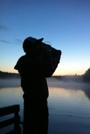
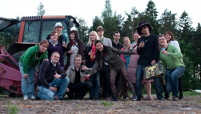
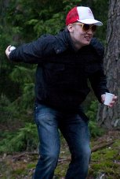
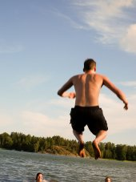
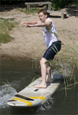
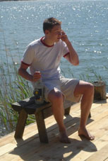

I'm Aki, a professional and hobbyist software developer from Finland. I tweet crap at Twitter and publish my code at GitHub. Work history can by spied at LinkedIn or later down this page . Oh, and I might occasionally rant something at my blog.
You can contact me using on of the following:
Here are some of my public projects. I usually share my source code in github, you can check that out for more.
Since February 2009 I've been working as a software developer at Reaktor, a Finnish software company specializing in expert IT services and effective software solutions. Want to get your IT project done properly? Let's see if we can help!
I served my compulsory Finnish military service as civilian service by doing research work at Aalto University, Department of Computer Science and Engineering. I spent most of the year 2011 there and concentrated on analyzing the energy efficiency of Android mobile applications, and offloading parts of mobile applications to cloud services in order to save energy on the devices.
2004 through 2009 I worked as a software engineer at Image Soft Oy, a software company based in Helsinki, specializing in advanced industrial measurement and data acquisition systems, remote maintenance products and demanding signal processing software. Mostly C++ development for Windows and Linux.
You can also take a look at my LinkedIn profile.
I graduated from Helsinki University of Technology (nowadays called Aalto University), department of Computer Science and Engineering. My major subject was Computer and Information Science and minor Telecommunications Software.
I wrote my master's thesis at Reaktor about concurrency control in Group Editors in the context of a Product Backlog management tool. It was approved with the grade 5 (excellent). Quite interesting stuff, as a result of which the CCF project was born.
» Concurrency Control in Group Editors: Case Study in a Product Backlog Tool (PDF)
|
 With homemade Boombox at a lake. (midsummer 2011) |
 Group portrait from the potato fields of Nauvo. Awesome. (midsummer 2010) |
|
|
 A tough game of pétanque with style (midsummer 2009) |
 Flying! (midsummer 2008) |
 Hardcore surfing (midsummer 2007) |
|
 Business on the beach (midsummer 2006) |
||
Yeah, I like midsummers! It seems to be getting wilder each year...
Update in 2011: Nope, now it's no longer getting wilder. Seems like we're getting old.
As a tribute to all the hard-working guys who digged those neverending holes to the home pages of 1990s, I want to let one of those heroes keep on working on my site.
Go Jack, go! You can do it!
For more of these working class heroes, check out this site.
I know you all want to know this, so here it goes, a reply from Randall Munroe about xkcd #302 being a reference to a Friends episode.
From: Randall Munroe <press@xkcd.com> Date: Wed, Dec 31, 2008 at 2:33 PM Subject: Re: Is xkcd #302 (Names) referencing to the TV show Friends? To: Aki Saarinen <XXX@akisaarinen.fi> On Wed, Dec 31, 2008 at 4:44 AM, Aki Saarinen <XXX@akisaarinen.fi> wrote: > Hello, > > I was left wondering whether xkcd http://xkcd.com/302/ (Names), is > referencing the popular TV show Friends by using the name Rachel in the > altar (as you might know, Ross failed at the altar by saying Rachel instead > of Emily in the Friends season 4 episode 24). > > I'm a fan of the Friends, so I can't help but think that this is yet another > ingenious reference in the xkcd series. But it might just be a coincidence, > too... I can't rest until I know the truth, so if you have the time to > answer this, I'd be really pleased! :) > > Sincerely, > Aki Saarinen You can rest -- sadly, it's not a reference. I am pretty unfamiliar with Friends. I think I've seen about one episode, total. It's a big gap in my pop-culture knowledge. It's just based on my own embarrassing experience (suitably exaggerated) :) Best, Randall
I was of course a little bit disappointed that it was not referencing Friends but really big thanks to Randall for replying! Finally, I can rest.
Some friends of mine, let's improve their Google juice. :)